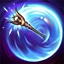
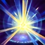

ILLUMINATION
Lux's damaging spells charge the target with energy for a few seconds.
Lux's next attack ignites the energy, dealing bonus magic damage (depending on Lux's level) to the target.
LIGHT BINDING
Lux releases a sphere of light that binds and deals damage to up to two enemy units.
PRISMATIC BARRIER
Lux throws her wand and bends the light around any friendly target it touches, protecting them from enemy damage.
LUCENT SINGULARITY
Fires an anomaly of twisted light to an area, which slows nearby enemies.
Lux can detonate it to damage enemies in the area of effect.
FINAL SPARK
After gathering energy, Lux fires a beam of light that deals damage to all targets in the area.
In addition, triggers Lux's passive ability and refreshes the Illumination debuff duration.